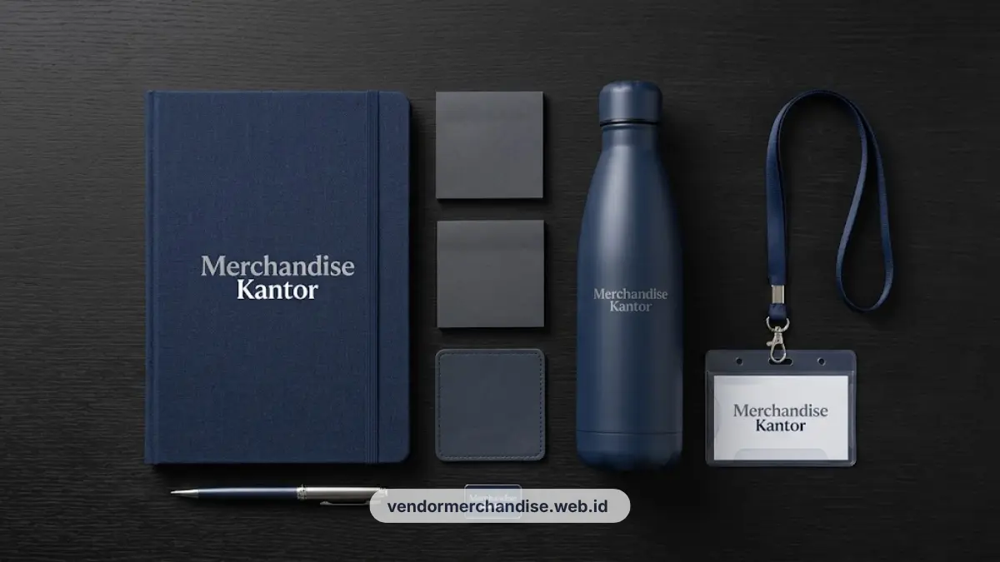

Welcome box karyawan baru eksklusif dengan custom logo dan isi paket lengkap kini tersedia untuk perusahaan di Yogyakarta, siap dipesan dan dikirim langsung ke kantor Anda.
Peran Welcome Box dalam Onboarding Karyawan Baru di Perusahaan Yogyakarta
Welcome box berperan sebagai media penyambutan resmi yang membantu karyawan baru merasa diterima dan dihargai sejak hari pertama bekerja.
Hari pertama bekerja sering menjadi momen yang menentukan bagaimana karyawan baru menilai budaya perusahaan. Kesan pertama yang positif dapat memengaruhi rasa percaya diri karyawan, kenyamanan dalam beradaptasi, dan persepsi terhadap profesionalisme perusahaan secara umum. Penggunaan paket merchandise onboarding karyawan yang dirancang khusus merupakan langkah efektif untuk menciptakan ikatan emosional positif.
Perusahaan di Yogyakarta, baik skala startup maupun korporasi besar, semakin banyak yang memasukkan welcome box sebagai bagian dari standar program onboarding. Penyiapan hadiah yang eksklusif seperti merchandise kantor eksklusif daily essentials memberikan rasa hormat yang mendalam kepada talenta baru.
Selain sebagai bentuk sambutan, welcome box juga berfungsi sebagai media employer branding. Item dengan logo perusahaan yang digunakan sehari-hari, seperti tumbler atau alat tulis, membantu memperkuat identitas visual brand di lingkungan kerja maupun saat dibawa keluar kantor.
Paket ini juga memberi sinyal bahwa perusahaan memperhatikan detail dan menghargai proses transisi karyawan baru ke lingkungan kerja yang baru.
Komponen Ideal Welcome Box Karyawan Baru yang Bisa Dipesan
Komponen ideal welcome box mencakup alat tulis custom, merchandise identitas perusahaan, dan kartu sambutan yang dapat disesuaikan dengan kebutuhan dan budget perusahaan.
Secara umum, komponen welcome box dapat dikelompokkan menjadi tiga kategori utama:
- Item Fungsional Harian: Produk yang dipakai langsung untuk pekerjaan sehari-hari seperti notebook, pulpen, dan flashdisk custom. Pilihan set stationery ini bisa dipadukan dari artikel notes dan pulpen custom logo.
- Item Identitas Perusahaan: Barang branding yang menampilkan logo perusahaan secara jelas seperti tumbler stainless custom logo, tote bag, atau mug keramik.
- Elemen Personal & Sambutan: Kartu ucapan selamat bergabung yang mencantumkan nama karyawan baru secara khusus.
Perusahaan dapat memilih kombinasi komponen sesuai anggaran, mulai dari paket ringkas untuk kebutuhan onboarding massal, hingga paket lengkap untuk posisi manajerial atau tim inti. Kualitas material dan finishing cetak logo menjadi pertimbangan penting agar welcome box tetap terlihat rapi dan tahan lama.

6 Ide Isi Paket Welcome Box Karyawan Baru
Berikut enam ide isi paket welcome box karyawan baru yang paling sering dipesan perusahaan untuk mendukung program onboarding:
- Buku catatan custom logo: Digunakan untuk kebutuhan meeting dan brainstorming harian karyawan baru.
- Pulpen premium: Dengan cetak logo atau nama perusahaan sebagai alat tulis kerja yang sering terlihat oleh rekan kerja lain.
- Tumbler stainless korporat: Mendukung gaya hidup sehat dan pemakaian jangka panjang di meja kerja.
- Kartu ucapan selamat bergabung: Berisi pesan sambutan hangat singkat dari jajaran manajemen atau tim HR.
- Lanyard / ID Card Holder custom: Untuk kelengkapan identitas karyawan sejak hari pertama beraktivitas, sejalan dengan lanyard ID card custom logo perusahaan.
- Tote Bag kanvas ringan: Memudahkan karyawan membawa perlengkapan kerja, laptop, atau dokumen penting, yang selaras dengan tote bag kanvas custom logo.
Kombinasi enam item ini dapat disesuaikan lagi berdasarkan jenis industri, misalnya menambahkan item khusus untuk perusahaan teknologi, kreatif, atau layanan profesional.
Cara Personalisasi Welcome Box dengan Nama dan Logo Perusahaan
Personalisasi welcome box dilakukan dengan mencetak nama karyawan, logo perusahaan, atau pesan sambutan pada kemasan maupun pada setiap item di dalam paket.
Proses personalisasi umumnya dimulai dari penentuan posisi logo pada setiap item, pemilihan warna yang sesuai dengan identitas brand, hingga penambahan nama karyawan pada kartu ucapan atau label kemasan. Anda bisa melihat referensi berbagai opsi cetak di katalog layanan custom logo Merchandise Kantor.
Beberapa perusahaan juga menambahkan pesan khusus dari pimpinan atau tim HR agar kesan yang diberikan terasa lebih hangat dan personal. Penggunaan bahan yang ramah lingkungan seperti pada merchandise kantor ramah lingkungan juga akan semakin menambah nilai positif pada welcome box perusahaan Anda.
Tingkat personalisasi dapat bervariasi tergantung jumlah pesanan. Untuk pemesanan dalam jumlah besar, personalisasi biasanya difokuskan pada logo dan warna brand secara umum, sementara nama karyawan dapat ditambahkan melalui stiker atau kartu terpisah agar proses produksi tetap efisien.

Pesan Welcome Box Karyawan Baru di Vendor Merchandise Kantor
Vendor Merchandise Kantor melayani pemesanan welcome box karyawan baru eksklusif dengan custom logo untuk perusahaan di Yogyakarta dan sekitarnya.
Tim kami membantu perusahaan Anda menentukan komposisi paket yang sesuai kebutuhan, mulai dari onboarding satu karyawan hingga kebutuhan dalam jumlah besar.
Hubungi Vendor Merchandise Kantor sekarang melalui WhatsApp resmi kami atau kunjungi halaman kontak kami untuk konsultasi paket dan penawaran harga welcome box karyawan baru bagi perusahaan Anda.